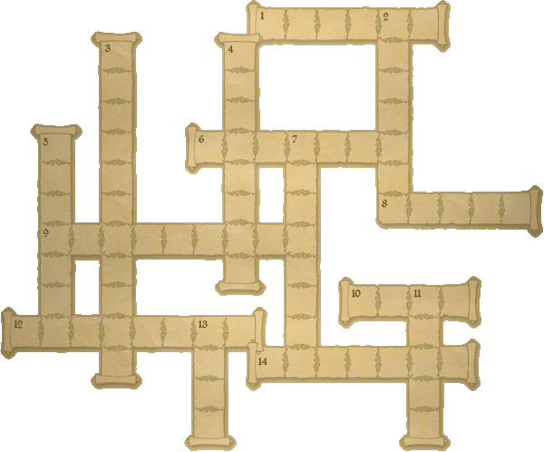

")
Postbag 19
This month is fairly sedate for me, which is a great relief to my old bones (did you know that the skull has 22 bones in it?). I've travelled widely, but at least most of my deliveries were to some fairly civilised people. Glough was a bit tricky to deliver to, though. He kept saying 'Oh no, you've got the wrong gnome.'
Dear Glough,
First of all, I'd like you to know that I was very impressed with your ambitions, intelligence and your keen plotting. Only one question - why in Gielinor do you hate humans so much? Was it because some human filled your face with pie? (I read this in one of the books on the history of RuneScape.) Well, if it is, I must tell you that it was done in a spirit of goodwill and friendship. I just want to know why you hate us so much.
Your schemes in sickening the spirit trees and unleashing that terrible Jungle Demon were impressive. I admit I foiled both your schemes, but I had no choice. I guess the greed of the dragon scimitar overwhelmed me. I continue to be an ardent fan of yours. But I assure you that we humans do NOT intend to destroy Gnomes. So try to put your brilliant mind to some good purposes. Are you, by any chance, plotting any other schemes while rotting in that prison or whatever? Because if you are, I WILL foil your plans again, although I'm loathe to. So just stay out of trouble so that I don't have to keep punching your smug face in whatever nose you have left.
Your supporter(steadily dimming support, though)
Metatron180
P.S. If you are planning some other terrible deeds, do try to make them a little more competitive. The black demon and Jungle Demon were like pieces of well-carved cake. Literally.
Human,
Coming from a gnome some of your words would be very flattering. It is a shame in many ways you were born a human; for all my hatred of your kind I must grudgingly respect you as you have been a worthy adversary up to now. Perhaps had you been born a gnome we could have stood together on a battlefield? Ah well...
Thankfully for me, and all gnomekind, you humans are so short sighted. Foiled my plans you say? Well if you really think you have heard the last of me that is wonderful: you can relax by the fire with some of your human delicacies. A pastry stuffed with redberries and some tea leaves in hot water! You can write me another letter to inform me of just how nice your pie was, only next time you will have to address it to King Glough.
I think I have told you quite enough about my plans now, but at least you can sleep peacefully knowing my “brilliant” mind is not going to waste.
Oh, and one more thing, I can assure you, adventurer (or should that be oversized meddler?): should you ever touch my nose I will stick a chocolate bomb so far down your throat you’ll be coughing up candy for a month!
Yours extremely sincerely,
Glough
Dear champion of RuneScape, you fool
Yes, you weakling, I'd love a nice challenge from you. It looks like you got 3 paintballs splattered on you - they might be red soon. If you want me to brawl with your 'minions' I sure will, just to have a brawl with the 'champion'
It's okay if you lose, because I'll just be taking your title as 'champion' for myself. I will bravely accept your challenge as a warrior/mage to destroy you!
The soon to be champion
Cenas Lil Bo
Cenas Lil Bo
Please, dear Saradomin, don't hurt me. I often wake up on my massive throne, surrounded by some of the most brain-curdlingly fearsome creatures you'll ever meet and think "Champion. You are so mighty and feared by whoever confronts you. But yet you know in your heart, beneath your little paint splodges, that Cenas 'The Ridiculously Solid' Lil Bo is out there and could destroy you utterly with a few stabs from his iron longsword".
That is what I think.
That is really, honestly what I think.
Lil Bo. That was sarcasm. The Imp Champion has been teaching me it. You will see me in your dreams, when I bathe in your soul.
Leon d'Cour
Champion of Champions
Elven City Guard
We have talked to you and your buddies around Prifddinas many times. You tell us we may not enter as long as there are criminals on the loose. We are the best warriors ever! If you let us in we could take care of these said criminals in a very short time. Now, be honest: there aren't really any criminals inside these walls, are there?
A couple questions for you: firstly, what lies behind the brigands; secondly, when will you let us great warriors in to take care of this little criminal problem?
Sincerely,
Plum Nutty 1 and 1indian
Dear Plum Nutty 1 and 1indian,
Well, that is rather the point is it not, imperfect human? There are no criminals within these walls - they only reside in the lands of men, gnome and beast. By guarding the gates against that which is outside we ensure the purity of our race. We cannot possibly even consider allowing you to set foot inside our ancient city, older than any other structure remaining on the face of RuneScape.
You cannot understand. You are not perfect enough. If you had ever seen the splendour of the Tower of Voices refracting in the sunlight, or the air itself in every corner of our city turn to rainbows in the Spring showers, or the last rays of the evening sun turn the world to deepest shades of bloody reds you would understand that no elf could be a criminal. We live in beauty; not this impure, unclean world that the other races grovel in.
Return now to your King Tyras, ruler of humans, and tell him that our city remains barred to him: he shall not pass.
The Elves
Dear Lord Drakan,
Lord Drakan, I have been thinking about your army... What is the difference between a vampyre and a vampire? Is it a polar oposite thing? As your stronghold is south of Morytania, where the vampyres live, and the vampires are north in the Haunted Forest, what is the difference between you?
Furthermore, when using a Guthix Balance potion, some of the juvinates would turn to "FULL" vampyres/vampires and lose their weakness to silver, suddenly becoming attackable with all weapons. If this is the case, why would anyone dare become a full vampyre/vampire? As you age, do you become a full-blood? Why is the half-blood version more powerful than a full-blood? Or do full vampyres/vampires have a hidden secret? Also, if you're so powerful, why did your brother/relative Count Draynor die so easily? He was a so-called "Pure-Blood" or "Full-Vyre" - shouldn't he be more powerful than you, or at least near your power?
At the gate of your castle,
Yours faithfully
Sanosuke T. Harada
Dear blood sack,
My Lord Drakan is not inclined to reply personally to one of the cattle, but such slander cannot go unanswered, so I have been charged with defending our honour.
The difference you note between that of the vampires of the north and my own vampyre breed is a complex one, suffice it to say that vampires are feral beasts with little control over their powers. They are driven by their hunger and a kind of primal rage, unlike we vampyres. Vampyres are sophisticated and intelligent, and will rule this world. Lord Drakan, even now, gathers his powers to crush the pathetic mortals that stand against him. Your blood will drown the Salve; the shadows of Sanguinesti will blot out the sun.
Count Draynor was a sorry excuse for a vampyre, and was cast out for his cowardice. It is only right that he be slain by the cattle he aimed to rule, and his long absence from my Lord's presence is what weakened him so. Be assured, there is no weapon on this world that can harm a full vampyre. At the peak of our powers we can turn darkness to solid form, control the weak-willed and pull the blood from your body without touching you.
We are not all cruelty and hate, of course, and I have been asked to present you with this gift of a portrait of the Drakan family.

My Divine Lord's image is absent because his visage can never be truly captured.
Yours sanguinely,
Solomon Lamescus
Dear dragons of the world,
It has come to my attention after doing battle with your kind that we humans know little about you other than that you can lick us easily. I have a couple of quetions. First, why can't any of you dragons fly? Also, do you record your history? Why do you simply attack us? Have you been around since the First Age? If you see Postie Pete wandering by, make sure not to cook him medium rare, as he has no skin and probably no flavour.
From your conterpart,
Questmaste21
P.S As soon as I get all my skills past level 50, I'm coming after you.
Meat,
King speak human better, but me glad to reply for dragons. Human know more of dragons soon. Dragons DO fly, you just see us on ground when eat you. See how proud Elvarg toast Crandor Island? Dragons have no past and dragons have no future, just are. We truly are masters' creation. This also reason why dragons attack - it come from masters' urge...need, to destroy. If you have trouble with us lowly dragons, you have BIG trouble with Kin. They return soon; we feel power growing, calling to us, calling to them... The very weapons that make you strong bring Kin's return ever closer. That irony - HAHAHAHAA. (Sorry. Dragon joke. You no get.)
Green dragon, Wilderness
p.s. How you think Postie Pete skull in first place...?
Dear Noodle the penguin,
Are you, perhaps, a penguin against the penguin wars? You're quite different from many of the other penguins. Your speech lacks proper puncuation, you hang out OUTSIDE the penguin outpost, and you even give away your ID to anyone that gives you whatever random junk you want. Why do you want swamp tar and feathers anyway?
The thing that concerns me most about you, however, is your mission report. You report on day 10, while the other mission reports I've seen have been from over an entire year. You report that you traveled a lot of places, they give a detailed report about what's happening. You ask for a raise this early, they don't even mention it. If I were the penguin boss, these two words would come out of my mouth right now at a highly deafening volume: YOU'RE FIRED! And I doubt you know this, but how did the Lumbridge operatives get to Lumbridge?
Sincerely, a fellow hu...I mean penguin,
Doghealer66
How ya doin', Dog'ealer66,
Oh, and let's be gettin' this straight, yeah, I din' give ya no ID or nuffin'; ya din' see me, roight? Noodle don' do no dodgy dealings, I'm all legit 'n' stuff. Besides, it were bizness, pure n straight - the report weren't mine neither, it were 'urs so you could, ya know, do ya thing...and yer did, so quit flappin', buddy.
I ain' against the Muvverland's war, per se. I'm more of yer...entrepr'neurial penguin type, like...a made macaroni. Me 'n' me bruvva, Alfredo, 'ave a, ya know, certain way a doin' things...our way. An' don' be riling me speech, mate, making fun o' poor Noodle's noodle; I've bin writin' n talkin' like this since I were a chick - it's perfec'ly prop'r fer one a the Penne Lisce, or Fettuccine Mafia, if ya will. Lucky it's ol' Noodle youse asking; if it were them Gemelli twins, you'd be eatin' wi' the fishes. But ol' Noodle ain' like dat...fancy a ring of life, solid gold, only used once?
An' as far as them Lum'ridge penguins go, well, Rotini has a thing abaat wool, see - funny guy (don' tell 'im that to 'is face, yeah, he don' like it) - and 'ooked 'em up wi' the costume...fer a fee, a course. I 'eard they 'ad some trubble wi' flyin' yeller amfibians on the walk down, or summat. Weird.
Later,
Noodle Fideu
p.s. The tar 'n' fevvers...they wuz fer me mum. Tough ol' bird that she is, she's losing 'er fevvers...but she's fam'ly, she's me ma, an' us macaronis do right by 'er.
Dear Burgher Mawnis Burowgar,
As a new member of Fremennik society, I have noticed a banner or standard waving in the towns. On the banner of Jaitizso appears to be a tree with split branches and also spit roots, while yours appears to be a symbol of a yak. Can you tell me more about these symbols?
Also, I recently read something about navigation using crystals. It is possible to sail even on the foggiest of days and know where the sun is by using a crystal. It has something to do with the refraction qualities of the crystal and the angle at which it is held. I've not yet mastered the technique and I am rarely at sea long enough to be bothered with it, but perhaps this knowledge might be useful to my seagoing brethern. Or have they been doing this for years? I've heard a Fremennik never gets lost at sea.
As a last note, I'd really like to try some ground yak meat, but I haven't got a way to grind it. If I ever find a way, I'll make some nice sausages, or maybe even a patty of meat. It might be good to serve it on a bun. I'll be sure to name it after you.
~veiledvisitor~
Veiledvisitor,
Apologies if my words come across as a little cold, Veiledvisitor, but it's another King Sorvott day. Hardly a day goes by that is not interrupted by my distant relative in Jatiszo. This time we find ourselves under quarantine. Thorvald arrived from Rellekka only a few moments ago, dressed to the helm in the thickest cloth, with a letter claiming that our island was riddled with the 'dreaded' Yak's-tail Bugglerot. Bugglerot! It doesn't even make any sense!
Honestly, you hope that one day he'll get tired of it. But, as the old Neitiznot saying goes, "yaks might fly".
Apologies, I am being rude; I should answer your questions. The Tree Asunder of Jatiszo represents the splitting of the family tree while the Neitiznot Yak was the strongest of its herd and was felled by our great founder. We celebrate our own strength through that mighty creature.
As you imply, the Fremenniks have lost their seafaring reputation of late. The new generation is of the opinion that filling a longship with the brawniest of sailors is enough to get them to their destination. I find that it gets them nowhere faster. However, your ideas concerning crystals are interesting. I shall pass it on to Thorvald, before he leaves.
Finally, your patty idea sounds interesting! We tend to rip from the bone, but a yak patty still whets the appetite. We shall call it a beefburrowgar... actually, that should be a yakburrowgar - oh, and a really big one could be a big yak!
Burgher Mawnis Burrowgar
Dear Arianwyn of Lletya,
Your humble, hidden, and magical rebel base of Lletya interests me very much. As I know you are heavily burdened with the ongoing fight against the Death Guard, I will try to keep my questions short and precise.
My first to you is a rather simple question, or I should say pair of questions. How long has Lletya existed, and who was it founded by? Surely the war between the two factions has lasted centuries, giving it age.
Finally, how is it that your base has eluded Lord Iorwerth and his men for such a long time? I know your people speak of how the base hides between the tangles of plant life that Tirannwn offers, but surely by now they must have located it? Well, that is all I have to ask for now, reply soon.
Yours truly,
Longaxe
Dear Longaxe of the Human Lands,
Lletya is less the name of a specific place than it is the name of our home. You see, to those of us that defy the tyranny in Prifddinas, Lletya is not one location, but anywhere that we are forced to raise walls and live. Lord Iorwerth's traitorous followers constantly hunt us in all corners of Isafdar, so we must move our base constantly. The lodge you know as Lletya is merely our current base of operations.
It has been a lucky base to have escaped detection for so long, but we elves live much longer than you humans and measure time differently. We can be patient - I fear that Iorwerth's lackeys are merely taking their time to ensure that they find us before we realise that they are already at our gates...
Yours in Seren's light,
Arianwyn
Wise Old Tips
Chaotic Crossword
It seems that the Chaos Elemental has you all in a fluster over his dastardly anagrams. I have to admit, none of them made much sense to me, but I guess it helps if your skull isn't hollow! Anyway, I took the anagrams off to the Wise Old Man, who took one look at them and had them figured out. Rather than give you the answers, though, he's taken a few words from the answers and made them the solutions to a crossword!
If you want a few more hints to figure out the anagrams, then, you'd best solve the crossword and then figure out which words go with which anagrams... No one ever said the Wise Old Man would make things easy for you.

| Across
1. A large combat (6) 6. A colour like red (7) 8. One of those things you all spend time working on (5) 9. A dastardly little chap in grey robes (9) 10. ---- of the Red Axe (4) 12. Land of the White Knights (8) 14. Melzar's homeland (7) |
Down
2. Myths, stories and fairy tales (7) 3. Explosive rodents (11) 4. Guild for melee fighters (8) 5. The beings that think they rule the world (3,4) 7. The mage who wears the ying-yang amulet (8) 11. Rock (5) 13. Mischievous little demons (4) |
That's it from me for now, but I'll see you all again next month, so keep sending me your letters and paintings! Send your letters to  .
.
Don’t forget – when you send us your amazing creations we can’t accept links, so please don’t send them to us!
Next month... stuff!
Postie Pete

More articles in
Postbag from the Hedge
|
|